{kind=link}
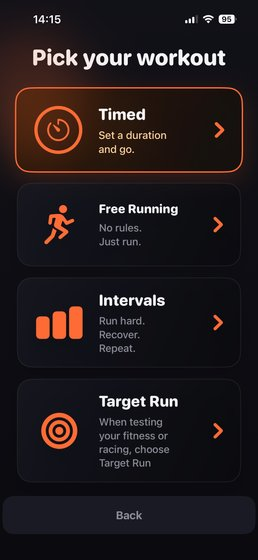
C008 · Workout menu: Timed selected — original
genuine_ios_screen · 1179×2556
Existing iOS screen; add a handset for a phone CTA.
Source library
16 genuine source images collected locally. 124 existing collection entries classified. Originals and master ads are preserved; generated scenes stay outside native App Store proof.

genuine_ios_screen · 1179×2556
Existing iOS screen; add a handset for a phone CTA.
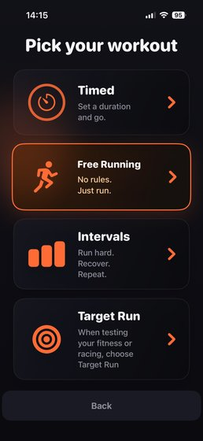
genuine_ios_screen · 1179×2556
Existing iOS screen; add a handset for a phone CTA.
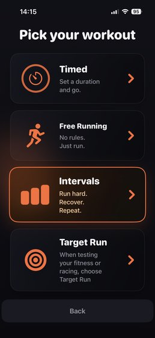
genuine_ios_screen · 1179×2556
Existing iOS screen; add a handset for a phone CTA.
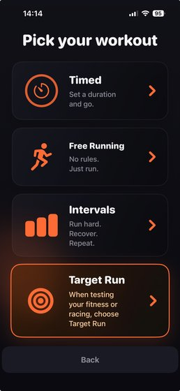
genuine_ios_screen · 1179×2556
Existing iOS screen; add a handset for a phone CTA.
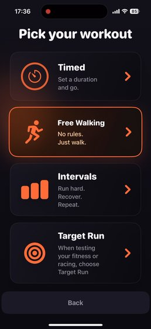
genuine iOS screen · 886×1920
Free Walking selected
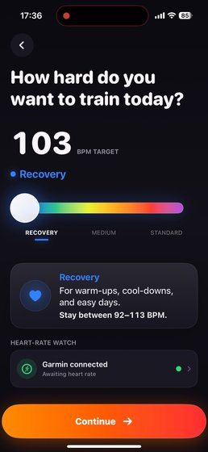
genuine iOS screen · 886×1920
Recovery target103; personal bounds92-113; awaiting heart rate
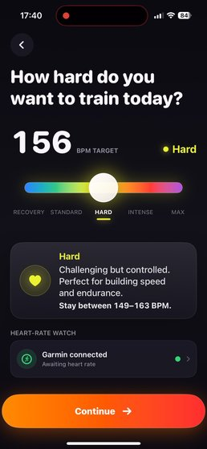
genuine iOS screen · 886×1920
Hard target156; personal bounds149-163; awaiting heart rate
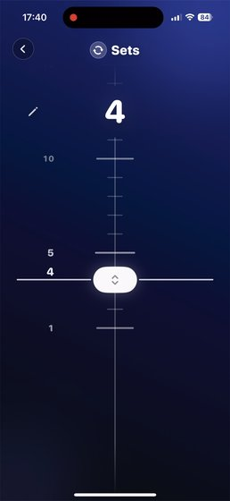
genuine iOS screen · 886×1920
Four sets selected
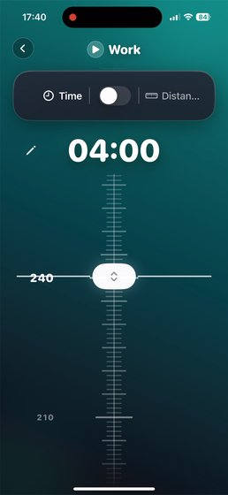
genuine iOS screen · 886×1920
Work04:00 selected
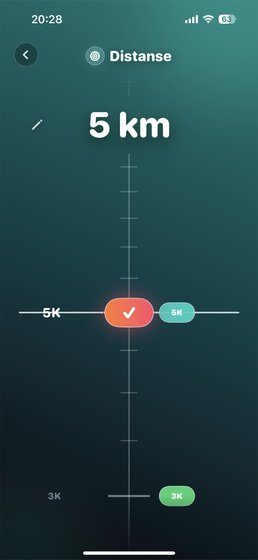
genuine iOS screenshot · 1179×2556
Norwegian UI; original Downloads capture birth and modification dates agree.
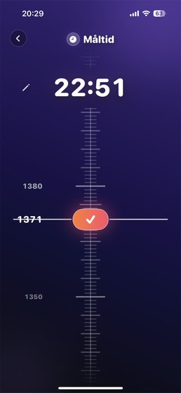
genuine iOS screenshot · 1179×2556
Norwegian UI; original Downloads capture birth and modification dates agree.
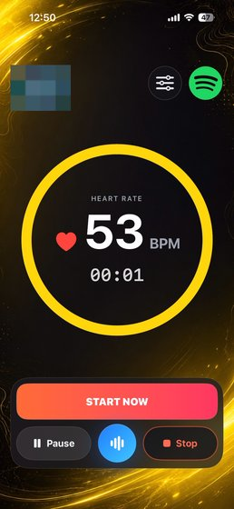
genuine iOS screen with existing map redaction · 886×1920
Existing prepared screen, with map area already obscured in the production asset.
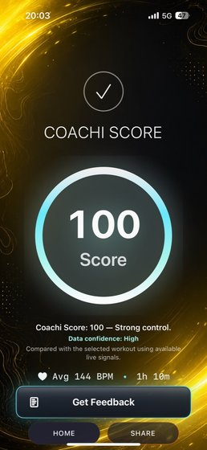
genuine Coachi screenshot · 590×1280
User supplied September 8; original capture date unknown, included by explicit request. Real source example, not Marathon narrator results. Phone average 144 BPM and watch average 146 BPM remain separate readings.
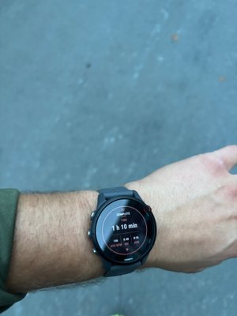
genuine user Garmin workout photograph · 2880×3840
User supplied September 8; original capture date unknown, included by explicit request. Real source example, not Marathon narrator results. Phone average 144 BPM and watch average 146 BPM remain separate readings. Photos C120-C122 show the same watch session, not three workouts.
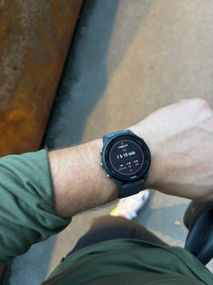
genuine user Garmin workout photograph · 2880×3840
User supplied September 8; original capture date unknown, included by explicit request. Real source example, not Marathon narrator results. Phone average 144 BPM and watch average 146 BPM remain separate readings. Photos C120-C122 show the same watch session, not three workouts.
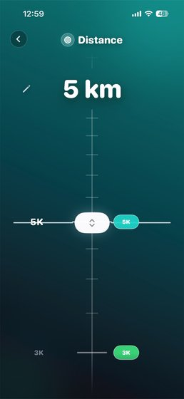
genuine iOS video frame · 886×1920
Exact decoded frame at requested seek1.72s; no text redrawn. Installed build unspecified.
Summer Dream V12. Native phone ingredient C097 is reusable. Reconstructed Apple Watch display is excluded from native proof; cinematic ad is not an App Store preview.
/Volumes/Riot APFS/Agentmode/coachi-marketing/content/video/generated/2026-09-04-coachi-cinematic-v2/female-cut-v3/edit/coachi-route-v12-summer-dream-tiktok.mp4
Stadium V7. Reuse original interval setup captures, not generated hand scenes or illustrative Garmin data.
/Volumes/Riot APFS/Agentmode/coachi-marketing/content/video/generated/2026-09-07-coachi-stadium-follow-along/edit/tap-phone-v7/coachi-stadium-tap-phone-v7-tiktok-bt709.mp4
Recovery V13. Reuse actual walking/Recovery setup. No live walking session was captured.
/Volumes/Riot APFS/Agentmode/coachi-marketing/content/video/generated/2026-09-06-coachi-cocker-walk/edit/tap-phone-v13/coachi-recovery-tap-phone-v13-tiktok-bt709.mp4
Native 886×1920; use the distance-picker excerpt, mute original audio. Later 80 km test excluded.
/Users/mariusgaarder/Downloads/ScreenRecording_09-05-2026 12-59-32_1.MP4
886×1920. Free Walking to Recovery setup; target HR is personal. Audio excluded.
/Volumes/Riot APFS/Agentmode/coachi-marketing/content/video/generated/2026-09-07-native-captures/originals/ScreenRecording_09-07-2026 17-36-43_1.mov
886×1920. Work and sets are usable. Rest footer, camera, app switcher, active location map and incidental source audio excluded.
/Volumes/Riot APFS/Agentmode/coachi-marketing/content/video/generated/2026-09-07-native-captures/originals/ScreenRecording_09-07-2026 17-40-03_1.MP4
640×1386, 2.6 seconds. Native video within a generated webpage handset. Reuse underlying native footage, not surrounding device rendering.
/Users/mariusgaarder/.codex/worktrees/21c2/treningscoach/static/site-v2/target-run/distance-picker.mp4
The 2.6-second Target Run excerpt is usable within a 15–30-second native App Store preview. On its own it is too short. The three finished cinematic ads must not be uploaded unchanged as previews.
The full inventory distinguishes source variants, social-only artwork, historical assets and unsettled UI. User-rejected old App Store cards are not copied into this package.
{kind=link}
{kind=link}
{kind=link}
{kind=link}
{kind=link}
{kind=link}
{kind=link}
{kind=link}
{kind=link}
{kind=link}
{kind=link}
{kind=link}
{kind=link}
{kind=link}
{kind=link}